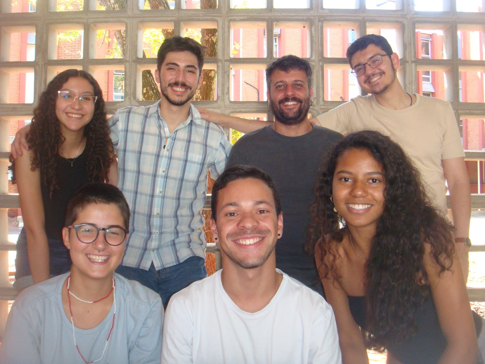
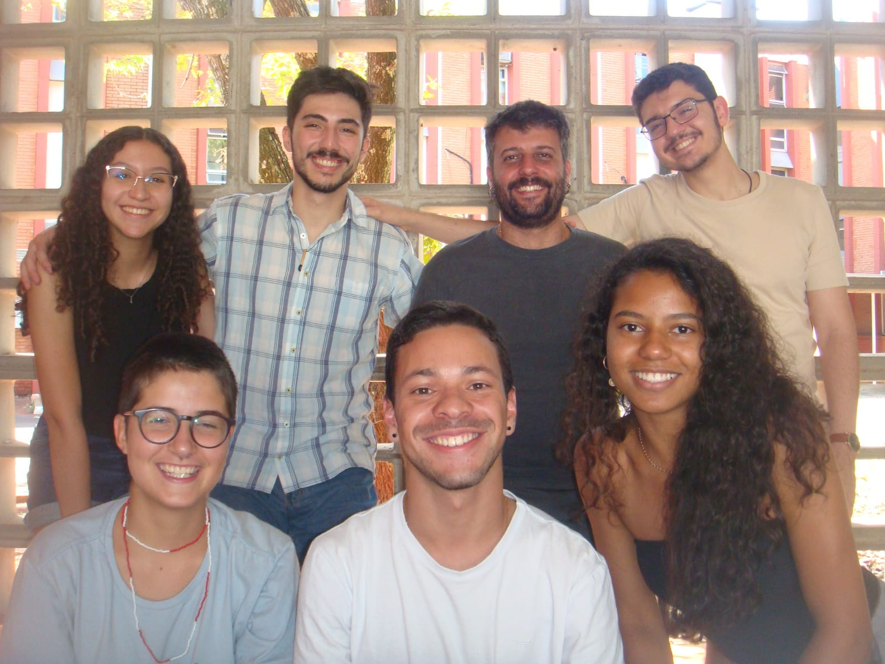

Conheçendo as ideias por trás do Igarapé
O Igarapé - Grupo Estratégico em Questões Ambientais - é um grupo sem fins lucrativos formado por estudantes da UNICAMP com objetivo de posicionar no centro das discussões as questões ambientais, em união com as áreas social e econômica. Trabalhamos com a formação de lideranças, capacitações, divulgação de informações e criação de projetos práticos que auxiliem na prosperidade do meio ambiente e da sociedade; focamos tanto na comunidade interna quanto externa à universidade.
O grupo permite aos membros realizar atividades de impacto e desenvolvimento em áreas como comunicação, estratégias de marketing e cultura interna, gerenciamento de projetos (como nossas rodas de construção) além de contato com profissionais do mercado ambiental. Tais atividades são desenvolvidas pelo nosso time composto pelas áreas de Pessoas, Projetos, Administrativo e Financeiro, Marketing e Presidência. Nos siga no Instagram e venha fazer parte da nossa família!! “Cultivando mudanças, irrigando soluções"